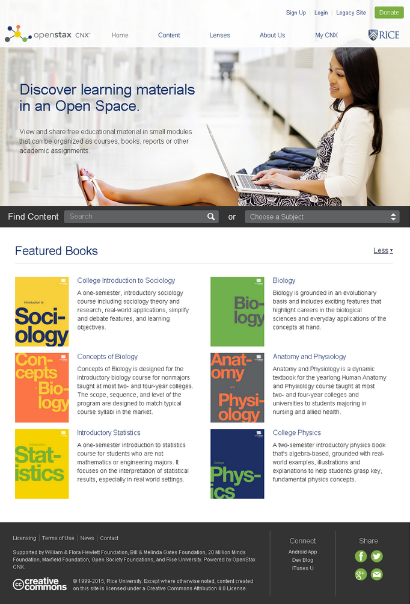

11.3 Livros didáticos abertos, pesquisa aberta e dados abertos



11.3.1 Livros didáticos abertos
Os manuais escolares e livros didáticos representam um custo crescente para os estudantes. Algumas obras custam 200 dólares ou mais, e nos EUA um estudante universitário de graduação gasta, em média, entre 530 e 640 dólares por ano em livros (Hill, 2015), embora o custo dos livros didáticos recomendados se situe entre 968 e 1221 dólares (Caulfield, 2015).
Em contrapartida, um livro didático aberto é uma publicação de licenciamento aberto e formato digital, de descarregamento gratuito para fins educativos ou não comerciais. O leitor encontra-se atualmente a ler um livro didático aberto. Multiplicam-se os repositórios destas publicações, tais como o OpenStax College da Universidade de Rice e o Open Academics Textbook Catalog da Universidade de Minnesota.
Na província canadense da Colúmbia Britânica, o governo financiou o projeto de livros didáticos abertos da B.C., desenvolvido inicialmente em colaboração com as províncias de Alberta e Saskatchewan, e atualmente alargado a outros territórios através do Canada OER Group. A iniciativa foca na disponibilização de manuais de licenciamento aberto para as disciplinas com maior volume de matrículas, estendendo-se igualmente à formação técnica e profissional. Neste projeto, tal como noutros repositórios, as obras são selecionadas, revistas por pares e, nalguns casos, redigidas por docentes das próprias instituições. Frequentemente, estes manuais não representam trabalhos originais de investigação inédita, mas sim sínteses estruturadas e ilustradas do estado da arte nas diversas áreas científicas.
11.3.1.1 Vantagens dos livros didáticos abertos
Estudantes e orçamentos públicos (através de bolsas e apoios) despendem anualmente somas elevadas na aquisição de manuais escolares. Os livros didáticos abertos podem contribuir para mitigar os custos de frequência do ensino. O governo da Colúmbia Britânica estima que o projeto BC Open Textbook poupou aos cerca de 300.000 estudantes da província mais de 4 milhões de dólares em manuais entre 2012 e 2017 (Bernard, 2017).
Cable Green, Diretor Executivo Interino da Creative Commons, delineia a seguinte visão para os livros didáticos abertos: 100% dos estudantes com acesso digital gratuito à totalidade dos materiais didáticos no primeiro dia de aulas. Trata-se de uma realidade distante do cenário atual.
DeNoyelles e Raible, na Universidade da Flórida Central, constataram (2017) que, devido aos custos elevados dos manuais:
- 30% dos estudantes inquiridos indicaram ter optado por não adquirir o manual recomendado pelo menos uma vez;
- 41% atrasaram a compra do livro didático;
- 15% inscreveram-se em menos disciplinas ou desistiram de frequentar um determinado curso.
DeNoyelles e Raible concluíram que:
- o custo dos manuais escolares impacta negativamente o acesso dos estudantes aos materiais obrigatórios (66,6% não adquiriram o livro exigido) e a sua aprendizagem (37,6% obtiveram classificações baixas e 19,8% reprovaram na disciplina).
Um inquérito realizado a estudantes do ensino superior público na Flórida pela organização Florida Virtual Campus (2016) revelou que, em consequência dos custos elevados das obras:
- o tempo necessário para a graduação e o acesso às disciplinas são afetados pelos custos. Os estudantes reportaram que ocasionalmente ou frequentemente:
- inscrevem-se em menos disciplinas (47,6%);
- não se registam numa determinada disciplina (45,5%);
- desistem de uma disciplina em curso (26,1%) ou
- anulam a inscrição em disciplinas (20,7%).
Delineiam-se outras variáveis. É comum verificar filas extensas nas livrarias dos campi durante a primeira semana de aulas (o que consome tempo útil de estudo). Pelo fato de os estudantes procurarem exemplares em segunda mão com colegas, o acesso efetivo ao manual pode atrasar-se para a segunda ou terceira semana do semestre.
Assim, por que motivo as tutelas governamentais não financiariam diretamente os autores dos livros didáticos, eliminando a intermediação editorial comercial, reduzindo os custos em mais de 80% e distribuindo as obras aos estudantes (e ao público geral) de forma gratuita na internet sob uma licença Creative Commons?


11.3.1.2 Limitações dos livros didáticos abertos
A resistência do corpo docente constitui um obstáculo para a adoção de livros didáticos abertos. Em 2017, estas publicações tinham sido integradas em metade a dois terços das instituições canadenses, registando-se outros 20% em fase de avaliação. Contudo, o cenário variava segundo as províncias. Na Colúmbia Britânica, 90% das instituições adotavam manuais abertos nalgumas disciplinas; em Saskatchewan e no Quebec, a proporção situava-se abaixo de um terço (Donovan et al., 2018), evidenciando o impacto das políticas públicas de apoio ao setor. A taxa de adoção revelou-se superior nas universidades e instituições de grande porte. O estudo constatou ainda lacunas de conhecimento e carência de ações de formação para docentes no uso de manuais abertos e REA.
Murphy (2013) questiona o próprio conceito de manual escolar, independentemente da sua modalidade de licenciamento (aberto ou fechado). Encara os livros didáticos como herança do modelo industrial do século XIX, estruturados em lógicas de transmissão de massa (broadcasting). Na era digital, os estudantes devem desenvolver a capacidade de localizar, acessar e compilar recursos digitais na internet. Os manuais representam conteúdos fechados, nos quais os autores assumem tarefas que caberiam aos alunos. Contudo, importa reconhecer que os manuais constituem o suporte letivo de base na generalidade dos sistemas de ensino e, perante esta realidade, os livros didáticos abertos representam uma opção favorável para os estudantes face aos manuais comerciais dispendiosos.
A qualidade técnica e pedagógica permanece um tema de reflexão, coexistindo a percepção de que a gratuidade se correlaciona com a falta de qualidade. Os argumentos aplicáveis aos REA estendem-se aos manuais abertos. Adicionalmente, as edições comerciais dispendiosas integram frequentemente propostas de atividades, materiais complementares (leituras adicionais) e bancos de questões de avaliação. Contudo, Jhangiani e Jhangiani (2017), num inquérito realizado a 320 estudantes de graduação na Colúmbia Britânica que utilizaram livros didáticos abertos, constataram que 96% dos inquiridos consideraram a qualidade das obras equivalente ou superior à das edições comerciais.
Outros investigadores (incluindo eu próprio) debatem o impacto do modelo aberto na viabilidade de produzir obras originais de pendor especializado ou que não constem dos currículos padronizados, as quais dificilmente obterão subsídios públicos. Poderá o modelo aberto impactar a diversidade editorial? Qual o estímulo para a autoria de obras originais face à ausência de compensação financeira? A escrita de um manual original de autoria individual constitui um trabalho exigente, independentemente do modelo de publicação.
Embora existam serviços de publicação aberta, a produção de uma obra original envolve custos para o autor: quem assumirá as despesas de revisão linguística, científica e de concepção de grafismos especializados? Utilizei o meu blog pessoal para submeter secções desta obra a revisão geral, metodologia que se revelou útil. Adicionalmente, recorreu-se a especialistas de prestígio para uma revisão científica independente (ver Apêndice 3). Beneficiei igualmente de suporte técnico gratuito da BCcampus e da Contact North, recursos aos quais a maioria dos potenciais autores de manuais abertos pode não ter acesso facilitado.
A promoção e distribuição constituem outra vertente. A promoção eficaz de uma obra exige dedicação de tempo e competências especializadas. Sob a minha experiência pessoal de publicação de doze livros comerciais, as editoras demonstram debilidades na promoção de manuais especializados, transferindo essa tarefa para os autores enquanto retêm 85% a 90% da receita de vendas. No entanto, subsistem custos reais na promoção de um livro didático aberto.
De que forma podem ser cobertos estes custos? Requer-se o desenvolvimento de estudos sobre o suporte à publicação aberta de obras originais em formato de livro, analisando as suas implicações na produção, disseminação e conservação do conhecimento científico. O sucesso de manuais abertos assenta na estruturação de modelos de financiamento sustentáveis, nos quais a dotação de fundos públicos assume papel relevante.
Contudo, embora estes temas constituam preocupações pertinentes, não representam obstáculos intransponíveis. Garantir a disponibilização gratuita de uma percentagem dos manuais de referência aos estudantes representa um avanço significativo. Para uma reflexão sobre a minha experiência na escrita da primeira edição desta obra, ver "Writing an Online Book: Is it Worth it?" (Bates, 2015).
11.3.1.3 Como adotar e utilizar um livro didático aberto
A BCcampus disponibilizou um MOOC curto no portal P2PU intitulado Adopting Open Textbooks. Embora o curso possa não estar ativo, a maior parte dos conteúdos e vídeos permanece acessível para consulta.
11.3.2 Pesquisa aberta (Open Research)
As tutelas governamentais de diversos países, como os EUA, Canadá e Reino Unido, exigem que as publicações científicas decorrentes de projetos com financiamento público sejam disponibilizadas em acesso aberto e formato digital. No Canadá, o Ministério de Estado para a Ciência e Tecnologia determinou (fevereiro de 2015) o seguinte:
A política harmonizada de acesso aberto (Tri-Agency Open Access Policy on Publications) determina que todas as publicações em revistas com revisão por pares financiadas por uma das três agências federais de concessão de fundos devem ser disponibilizadas gratuitamente on-line no prazo de 12 meses após a publicação.
Também no Canadá, decisões do Supremo Tribunal e alterações legislativas introduzidas em 2014 facilitaram a utilização gratuita de materiais on-line para fins educativos, embora persistam condicionantes.
As editoras comerciais que lideram o mercado de periódicos acadêmicos têm reagido a estas medidas. Quando uma revista científica detém prestígio e relevância na avaliação do desempenho de pesquisadores, as editoras cobram taxas aos próprios autores para disponibilizar os artigos em acesso aberto. O prestígio associado à publicação em periódicos consolidados desincentiva os pesquisadores a optarem por revistas abertas de menor projeção que não cobrem taxas de publicação.
No entanto, a tendência passará pela afirmação de revistas científicas abertas autogeridas pelas comunidades acadêmicas, cuja reputação se consolidará pela qualidade dos artigos e pelo prestígio dos pesquisadores que nelas publicam. O sucesso deste modelo assenta no cumprimento de padrões rigorosos de revisão por pares e na estruturação de modelos de financiamento sustentáveis liderados pelos próprios pesquisadores.
Deste modo, prevê-se que, progressivamente, a quase totalidade da investigação acadêmica publicada em revistas científicas se torne acessível em formato aberto.
11.3.3 Dados abertos (Open Data)
As fontes principais de dados abertos provêm dos domínios governamentais e científicos. Na sequência de consultas com instituições produtoras de dados dos estados-membros, a OCDE publicou em 2007 as Diretrizes e Princípios da OCDE para o Acesso a Dados de Pesquisa com Financiamento Público (OECD Principles and Guidelines for Access to Research Data from Public Funding). Na ciência, o Projeto Genoma Humano constitui um exemplo de referência nesta área, registando-se igualmente portais de dados públicos criados por governos nacionais ou provinciais, como o B.C. Data Catalogue no Canadá.
Assiste-se à disponibilização crescente de dados relevantes em formato aberto, estruturando recursos com potencial letivo significativo.
As implicações das dinâmicas do acesso aberto, REA, manuais abertos e dados abertos para o ensino e a aprendizagem serão analisadas detalhadamente na seção seguinte.
Referências
Bates, T. (2015) Writing an online, open textbook: is it worth it? Online Learning and Distance Education Resources, June 10
Bernard, R. (2017) ‘Open textbooks’ catching on at BC colleges and universities CityNews, February 10
Caulfield, M. (2015) Asking What Students Spend on Textbooks Is the Wrong Question, Hapgood, November 9
DeNoyelles, A. and Raible, J. (2017) Exploring the Use of E-Textbooks in Higher Education: A Multiyear Study EDUCAUSE Review, October 9
Donovan, T. et al. (2018) Tracking Online and Distance Education in Canadian Universities and Colleges: 2018 Halifax NS: Canadian Digital Learning Research Association
Florida Virtual Campus (2016) 2016 Florida Student Textbook & Course Materials Survey. Tallahassee, FL.
Hill, P. (2015) How Much Do College Students Actually Pay For Textbooks? e-Literate, March 25
Jhangiani, R. and Jhangiani, S. (2017) Investigating the Perceptions, Use, and Impact of Open Textbooks: A survey of Post-Secondary Students in British Columbia International Review of Research in Open and Distributed Learning, Vol. 18, No. 4
Murphy, E. (2013) Day 2 panel discussion Vancouver BC: COHERE 2013 conference
OECD (2007) OECD Principles and Guidelines for Access to Research Data from Public Funding Paris FR: OECD
Atividade 11.3 Utilizando outros recursos abertos
- Consulte as plataformas OpenStax College, Open Academics Textbook Catalog e o projeto de livros didáticos abertos da B.C. para verificar a existência de manuais abertos adequados para a sua disciplina.
- Quais revistas científicas em formato aberto existem na sua área do conhecimento? (A ajuda de um bibliotecário poderá ser útil). Os artigos apresentam qualidade científica consistente? Os seus estudantes poderiam utilizá-los em projetos de pesquisa?
- Solicite apoio aos serviços de biblioteca para localizar portais de dados abertos com relevância para a sua disciplina. Os estudantes conseguiriam pesquisar estes dados de forma autônoma com orientações mínimas? De que forma poderiam integrar estes dados abertos nas atividades de aprendizagem?